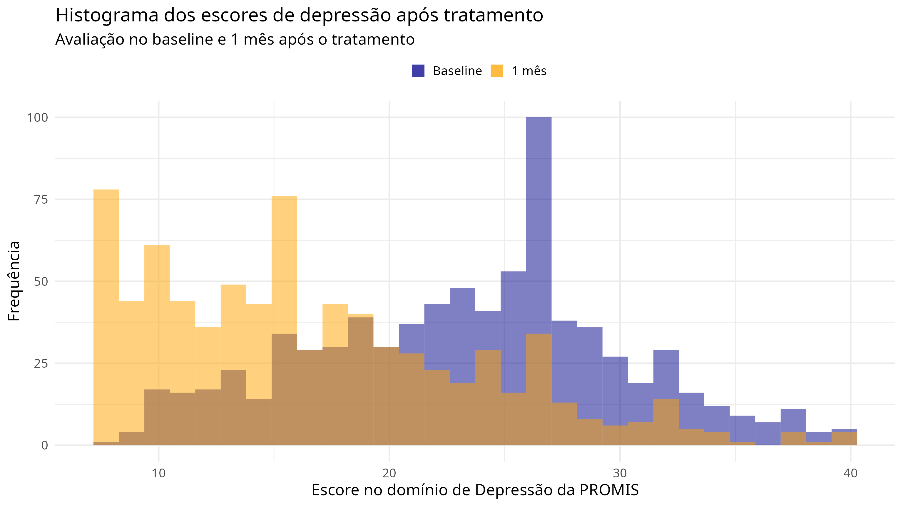
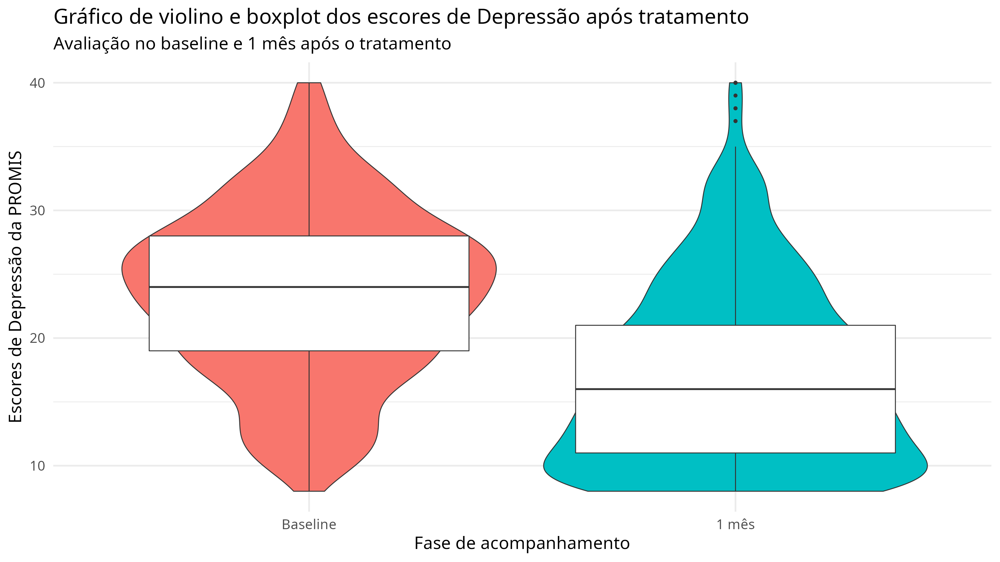
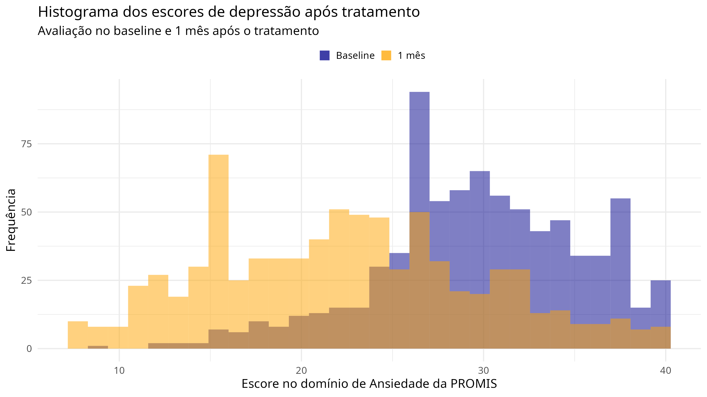
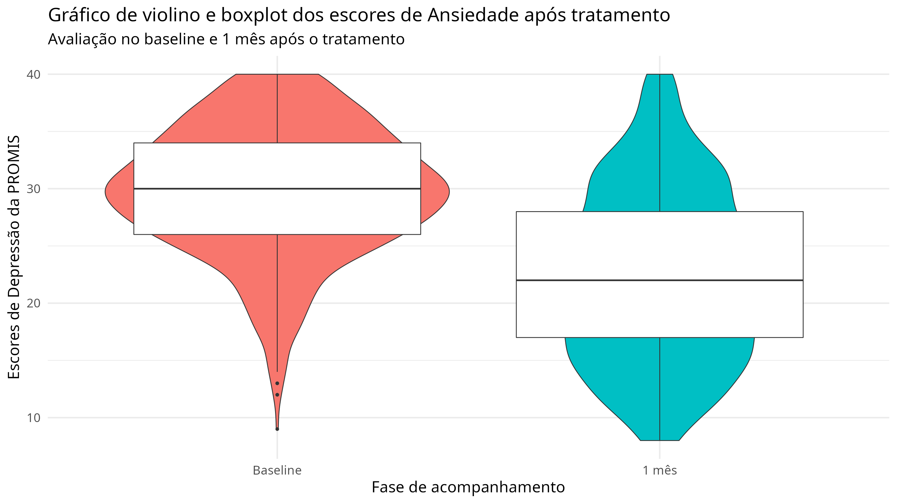
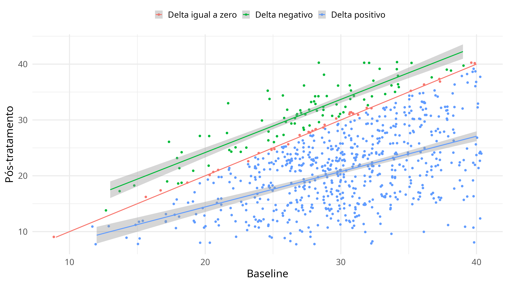

Depressão
Como medida de sintomas depressivos, utilizou-se o domínio de depressão do instrumento Patient-Reported Outcomes Measurement Information System (PROMIS). Nesta primeira etapa, podemos almejar explorar brevemente como os escores do instrumento se distribuem na linha de base (baseline) e no acompanhamento após 1 mês da intervenção.
Com este objetivo, gerou-se um histograma da distribuição dos escores em cada um dos tempos:

Violin plots e boxplots também foram gerados para verificar de forma mais direta a diferença entre os escores de depressão antes e depois:

Ansiedade
Os níveis de ansiedade também foram avaliados a partir do PROMIS e os mesmos plots podem ser visualizados abaixo:

Diferença nos sintomas ansiosos no pré e pós tratamento
Para calcular a mudança ao longo do tempo, calculou-se o \(\Delta_i\) que se dá pela seguinte equação: \(pre_i - pos_i\), sendo \(pre_i\) o escore da observação \(i\) no domínio de ansiedade da PROMIS no baseline e \(pos_i\), no pós-tratamento (1 mês).
Abaixo, segue um scatterplot com os grupos de \(\Delta\) estratificados.

Como pode-se visualizar, a maioria da amostra apresentou uma resposta aparentemente positiva, baseando-se na mudança de escore de um tempo para o outro do estudo.
| Delta | Frequência absoluta | Frequência relativa |
|---|---|---|
| Delta igual a zero | 37 | 4.69% |
| Delta negativo | 90 | 11.41% |
| Delta positivo | 662 | 83.90% |